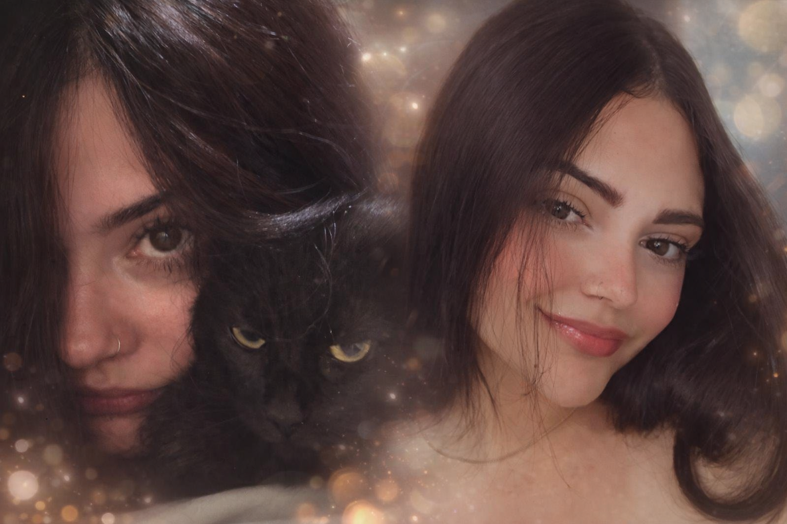
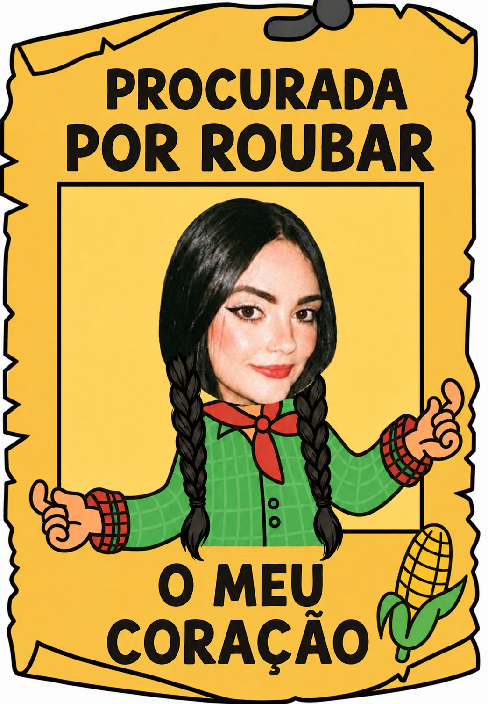

27 de agosto · Dia do PsicólogoHoje é o dia de celebrar quem decidiu, de propósito, cuidar da cabeça dos outros e você faz isso com uma dedicação que eu reparo e admiro, mesmo sem falar todos os dias. Feliz Dia do Psicólogo, Marcela Yasmini Machado. Você escolheu bem!!!
Sinto muito por te tratado mal, e irritado a sua pessoa tão querida :((( e por não ter lembrado do seu dia antes de você falar(ME PERDOA). Você merecia ter ouvido isso logo de manhã, não depois de um dia já difícil. Desculpa mesmo e obrigado por cuidar tão bem de todo mundo, inclusive de mim.

Com carinho do seu amor FELIPE :))